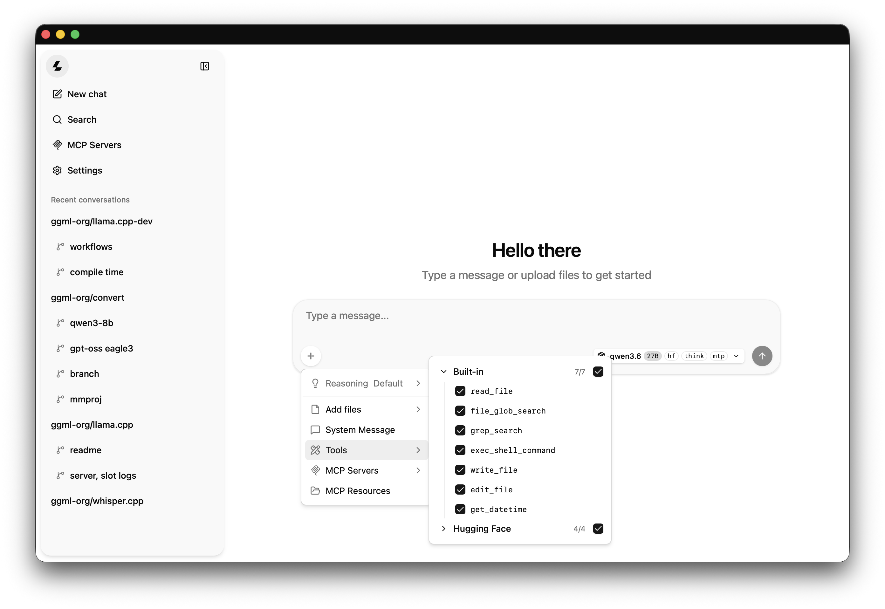

Ollama
A straightforward way to download and chat with small models on your computer.
See the Ollama setupLOCAL AI, MADE SIMPLE
This site introduces nine compact language models. They can be tried on your own computer with Ollama. The answers still need checking.
Browse all modelsSTART HERE
WAYS TO RUN MODELS
A straightforward way to download and chat with small models on your computer.
See the Ollama setupA serving engine for running model APIs, often used with supported GPUs.
Read the vLLM quickstart
Serve a local model through a browser interface and an OpenAI-compatible API.
Explore llama.cpp serverThese are different ways to run models locally. The right choice depends on your computer and whether you want a chat app or an API.
MODEL LIST
Qwen · 1.7B
A compact Qwen model with a little more capacity than the 0.6B version.
Model detailsGemma · E2B
A compact Gemma option for general questions and short text work.
Model detailsGemma · E4B
A larger compact Gemma choice that may handle more context than E2B.
Model detailsDeepSeek · 1.5B
A small reasoning-focused model distilled from a Qwen model.
Model details